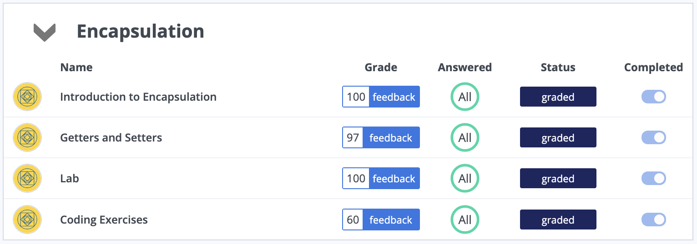

Unit 5: Artefacts
Metrics
Task: Discuss the metrics used to assess the features of an object oriented program:
1. Number of Methods: The amount of methods used within a class directly influence the complexity of the program.
2. Cohesion: Cohesion is used to measure the relationships of methods within clases. Methods that are more "self-contained" or "standalone" are easier to modify and change, as changing them will not have a knock-on effect on other methods within the class.
3. Depth of Inheritance: Measuring the hierarchy levels within classes can be important, as code that has high levels of inheritance can become complicated very quickly. Not only does this make the code hard to maintain, but changing something minor in one method or class might break functionality within something that inherits from the class that was changed.
4. Coupling: In similar fashion to inheritance depth, coupling can also have a negative impact on reusability and maintainability. If methods or classes are too tightly connected, then changing them ever so slightly might break the entire functionality of the program.
These are just a few examples of metrics used to measure and assess object-oriented code.
Bank Program
Task: Develop a Python porgram which has three abstract methods and one subclass which allows a user to perform banking operations.
To create this program, I first designed an "Account" class that mimics the behaviour of a bank account. This class has three abstract methods, which are: deposit(), withdraw(), check_current() and check_savings(). Within an object of the "Customer" class, the balance of each account is stored together with the name of the customer. Since "Account" is an abstract class with abstract methods, and "Customer" inherits these from "Account", we can now perform banking transactions like "withdrawal", "deposit", or checking the balance of our accounts from within the "Customer" class.
Codio
As part of my studies and practice, I completed the "Encapsulation" unit on Codio.
